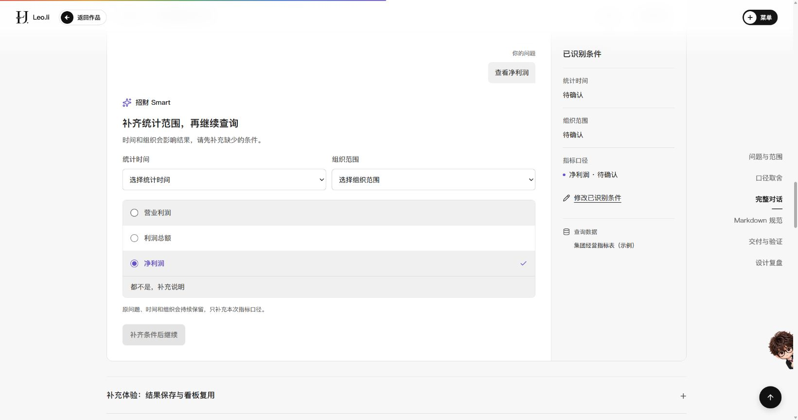
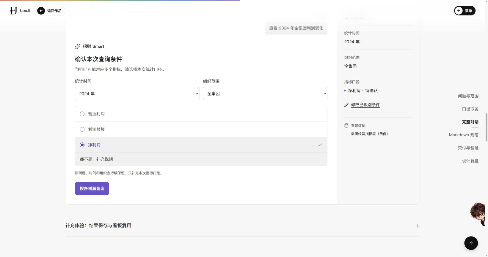
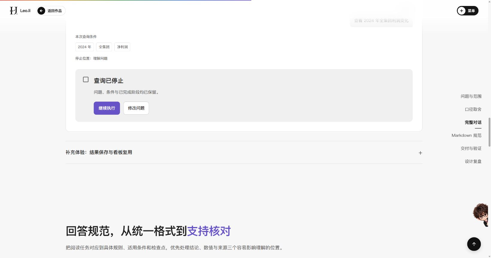
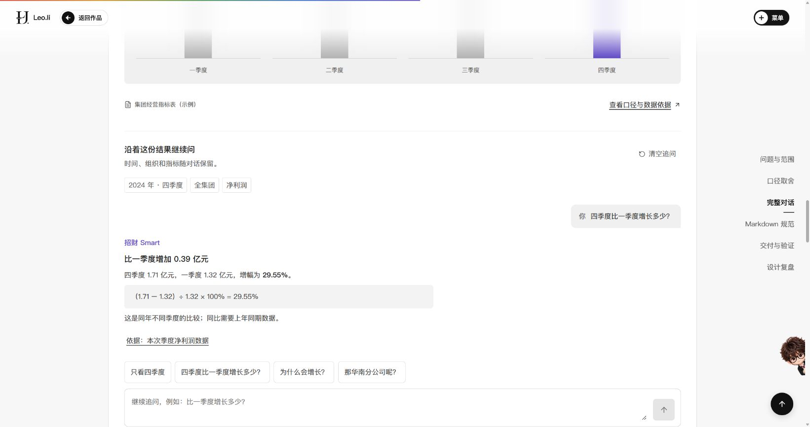
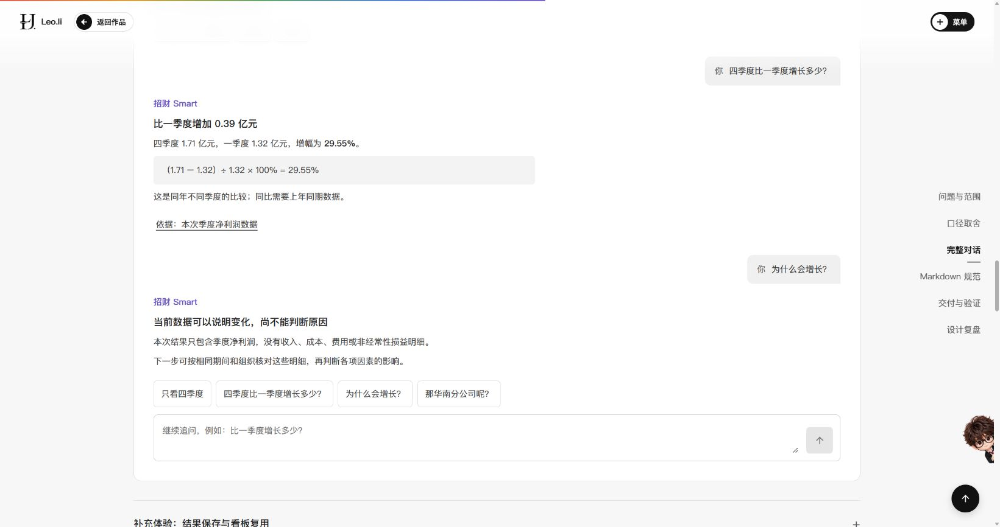
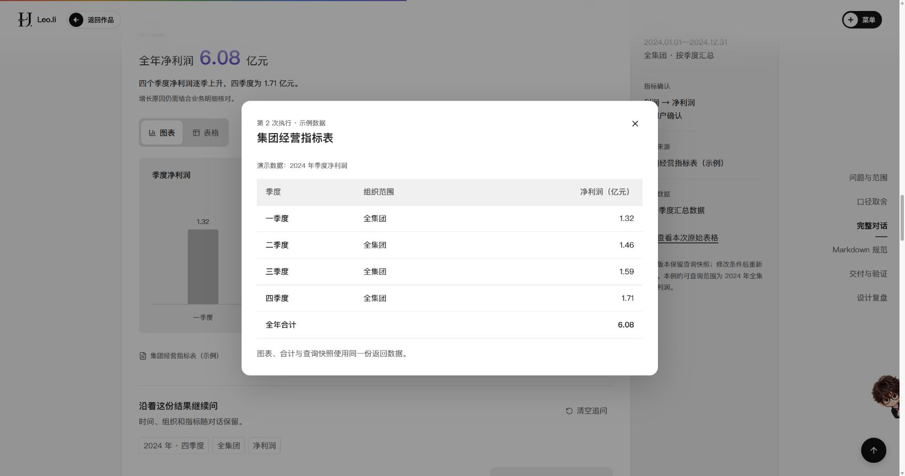
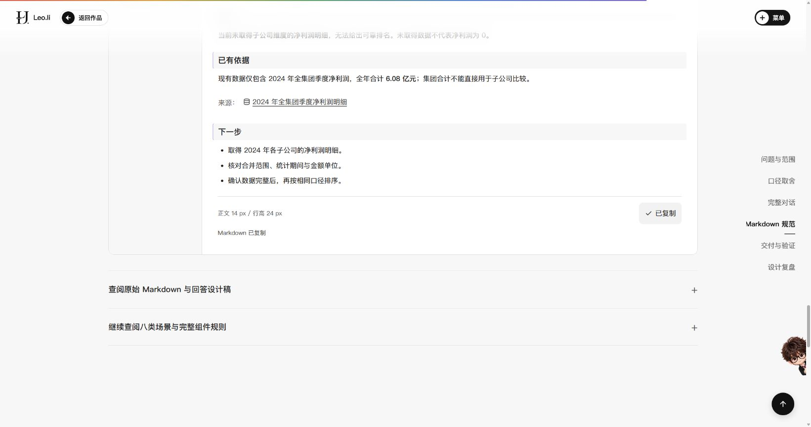
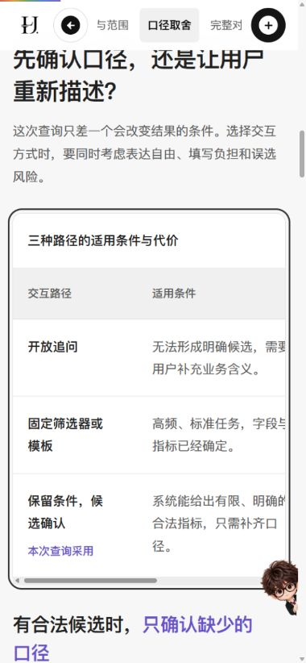

招财 Smart 原型任务走查记录
检查日期：2026 年 10 月 19 日。检查对象：作品集本页的交互示例。方式：在浏览器中按预设任务逐项操作，记录显示内容、控件状态和截图。
本记录核对指定示例的交互行为与回答表达。它不涉及真人任务测试、真实模型评测或业务服务，也不用于推断 2025 年原产品的上线状态与成效。
T01 · 输入“查看净利润”，缺失时间和组织
- 预期规则
- 保留原问题；未知条件不默认填充；禁止执行
- 实际记录
展开界面文字与状态
交互演示 · 示例数据 完整任务 口径确认 慢查询演示 顺利完成查询 异常恢复 智能问数 / 集团年度利润分析 待确认 新建查询 你的问题 查看净利润 招财 Smart 补齐统计范围，再继续查询 时间和组织会影响结果，请先补充缺少的条件。 统计时间 选择统计时间 2023 年 2024 年 2025 年 组织范围 选择组织范围 全集团 华南分公司 华东分公司 华北分公司 选择利润口径 营业利润 利润总额 净利润 都不是，补充说明 原问题、时间和组织会持续保留，只补充本次指标口径。 补齐条件后继续 已识别条件 统计时间 待确认 组织范围 待确认 指标口径 净利润 · 待确认 修改已识别条件 查询数据 集团经营指标表（示例） 继续执行按钮禁用：true

T02 · 选择净利润口径
- 预期规则
- 保留2024年和全集团；用户确认后可执行
- 实际记录
展开界面文字与状态
交互演示 · 示例数据 完整任务 口径确认 慢查询演示 顺利完成查询 异常恢复 智能问数 / 集团年度利润分析 待确认 新建查询 你的问题 查看 2024 年全集团利润变化 招财 Smart 确认本次查询条件 “利润”可能对应多个指标，请选择本次统计口径。 统计时间 选择统计时间 2023 年 2024 年 2025 年 组织范围 选择组织范围 全集团 华南分公司 华东分公司 华北分公司 选择利润口径 营业利润 利润总额 净利润 都不是，补充说明 原问题、时间和组织会持续保留，只补充本次指标口径。 按净利润查询 已识别条件 统计时间 2024 年 组织范围 全集团 指标口径 净利润 · 待确认 修改已识别条件 查询数据 集团经营指标表（示例） 查询按钮可用：true

T03 · 执行中停止，再继续执行
- 预期规则
- 停止不展示结果；原问题、已确认条件和阶段保留
- 实际记录
展开界面文字与状态
交互演示 · 示例数据 完整任务 口径确认 慢查询演示 顺利完成查询 异常恢复 智能问数 / 集团年度利润分析 已停止 新建查询 你的问题 查看 2024 年全集团利润变化 本次查询条件 2024 年 全集团 净利润 停止位置：理解问题 查询已停止 问题、条件与已完成阶段均已保留。 继续执行 修改问题 继续执行后的界面： 交互演示 · 示例数据 完整任务 口径确认 慢查询演示 顺利完成查询 异常恢复 智能问数 / 集团年度利润分析 已完成 新建查询 2024 年集团净利润分析 2024 年 全集团 净利润 · 用户已确认 修改条件 保存到看板 理解问题 查询数据 生成结果 查看过程 演示数据 全年净利润 6.08 亿元 四个季度净利润逐季上升，四季度为 1.71 亿元。 增长原因仍需结合业务明细核对。 图表 表格 季度净利润 单位：亿元 1.32 一季度 1.46 二季度 1.59 三季度 1.71 四季度 演示数据：2024 年季度净利润，单位亿元 季度 净利润 一季度 1.32 二季度 1.46 三季度 1.59 四季度 1.71 集团经营指标表（示例） 查看口径与数据依据 沿着这份结果继续问 时间、组织和指标随对话保留。 2024 年 · 全年 全集团 净利润 只看四季度 四季度比一季度增长多少？ 为什么会增长？ 那华南分公司呢？ 继续追问

T04 · 追问四季度比一季度增长多少
- 预期规则
- 增加0.39亿元、29.55%；明确为同年季度比较
- 实际记录
展开界面文字与状态
沿着这份结果继续问 时间、组织和指标随对话保留。 清空追问 2024 年 · 四季度 全集团 净利润 你 四季度比一季度增长多少？ 招财 Smart 比一季度增加 0.39 亿元 四季度 1.71 亿元，一季度 1.32 亿元，增幅为 29.55%。 （1.71 − 1.32）÷ 1.32 × 100% = 29.55% 这是同年不同季度的比较；同比需要上年同期数据。 依据：本次季度净利润数据 只看四季度 四季度比一季度增长多少？ 为什么会增长？ 那华南分公司呢？ 继续追问 追问已完成，统计时间、组织与指标继续保留。

T05 · 追问为什么增长
- 预期规则
- 不编原因，指出收入、成本、费用等明细缺口
- 实际记录
展开界面文字与状态
沿着这份结果继续问 时间、组织和指标随对话保留。 清空追问 2024 年 · 四季度 全集团 净利润 你 四季度比一季度增长多少？ 招财 Smart 比一季度增加 0.39 亿元 四季度 1.71 亿元，一季度 1.32 亿元，增幅为 29.55%。 （1.71 − 1.32）÷ 1.32 × 100% = 29.55% 这是同年不同季度的比较；同比需要上年同期数据。 依据：本次季度净利润数据 你 为什么会增长？ 招财 Smart 当前数据可以说明变化，尚不能判断原因 本次结果只包含季度净利润，没有收入、成本、费用或非经常性损益明细。 下一步可按相同期间和组织核对这些明细，再判断各项因素的影响。 只看四季度 四季度比一季度增长多少？ 为什么会增长？ 那华南分公司呢？ 继续追问 追问已完成，统计时间、组织与指标继续保留。

T06 · 从本次查询依据打开原始表格，Esc返回
- 预期规则
- 口径、期间、4条明细及合计一致；关闭回到来源按钮
- 实际记录
展开界面文字与状态
第 2 次执行 · 示例数据 集团经营指标表 演示数据：2024 年季度净利润 季度 组织范围 净利润（亿元） 一季度 全集团 1.32 二季度 全集团 1.46 三季度 全集团 1.59 四季度 全集团 1.71 全年合计 6.08 图表、合计与查询快照使用同一份返回数据。 关闭后：{"dialog":false,"focus":"查看本次原始表格"}

T07 · 查看未取得数据场景并复制Markdown
- 预期规则
- 说明缺失维度，不生成排名、不填0；复制完成反馈
- 实际记录
展开界面文字与状态
当前无法比较子公司净利润 标题层级 结论 标题层级 当前未取得子公司维度的净利润明细，无法给出可靠排名。未取得数据不代表净利润为 0。 已有依据 标题层级 现有数据仅包含 2024 年全集团季度净利润，全年合计 6.08 亿元；集团合计不能直接用于子公司比较。 来源： 2024 年全集团季度净利润明细 下一步 标题层级 取得 2024 年各子公司的净利润明细。 核对合并范围、统计期间与金额单位。 确认数据完整后，再按相同口径排序。 复制反馈：Markdown 已复制

T08 · 390px手机查看方案表格并用方向键横向滚动
- 预期规则
- 页面不横向溢出；列保留、表格局部滚动且可键盘进入
- 实际记录
展开界面文字与状态
{ "page": 380, "scrollLeft": 1.3333333730697632, "tabIndex": 0, "table": 660, "viewport": 390, "visible": 347 }
